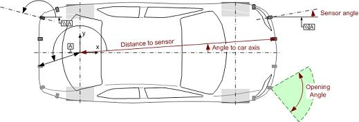

To configure a vehicle edit an *.ini file. As default VS6 uses
"defaultcar.ini". You can copy and change it.
A Vehicle can be configured by following values:
[Vehicle]
| Name: | Vehicle name displayed in VS6 II |
[car]
| length_mm: | Vehicle length [mm] |
| width_mm: | Vehicle width without rear-view mirror [mm] |
| wheelbase_mm: | Vehicle wheelbase [mm] |
| rearaxis2end_mm: | Distance rear axis to vehicle end [mm] |
| outlineX_mm: | Outline distance x [mm] (vehicle contour) |
| outlineY_mm: | Outline distance y [mm] (vehicle contour) |
| pcr_100thmm_pulse: | Wheel impulse resolution [100th mm / pulse] |
| trackwidth_mm: | Dynamic trackwidth [mm] |
| max_pulses: | Max number of wheel pulses (overflow of pulse counter) [1] On the vehicle CAN there should be a CAN signal which provides the wheel pulse counter. For this CAN signal a maximum value is defined after which the wheel pulse counter starts with 0 again. Therefore this maximum value has to be inserted here. Additionally in the source code of the ECU in the PDF header file the constant "APPL_MAX_PATHCNT_VALUE" has to be set to the same value! |
| pulses_per_circum: | Number of wheel pulses per wheel rotation [1] |
| steertrans: | average steering ration from steering wheel angle to wheel angle |
| EPSstateActive: | State for active steering (only for simulation) [1] |
[sensor_xxx]
| dist_rear_axis_mid: | Distance rear axis middle to sensor [mm] |
| angle_to_caraxis: | Angle car axis to line "Distance rear axis middle to densor" [100th degree] |
| sensor_angle: | Sensor angle to car axis [100th degree] |
| opening_angle: | Opening angle of sensor [100th degree] |
| range_mm: | range of sensor (for simulation) [mm] |
| height_mm | height of sensor (for simulation) [mm] |
